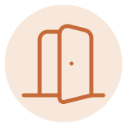
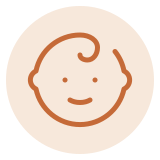
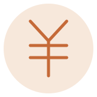
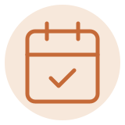

初めての方
- 予約は必要ですか？
- ご予約のうえお越しいただくと、お待たせせずにご案内できます。お電話またはフォームからご連絡ください。（仮）
- 何年も歯医者に行っていません。診てもらえますか？
- もちろんです。何年ぶりでも歓迎します。まずは今の状態を確認して、ここからどうするかを一緒に考えましょう。（仮）
- 初日はどんなことをしますか？
- 初日は、お話をうかがうことと検査・ご説明が中心です。痛みが強いときだけ、その日に応急処置をすることがあります。（仮）

痛み・恐怖について
- 歯医者が苦手で、痛みにも弱いです。
- 遠慮なくお伝えください。表面麻酔をしてからできるだけ細い針で麻酔し、つらいときはいつでも手を止めます。（仮）
- 相談だけでも行っていいですか？
- もちろんです。相談だけで帰っていただいてかまいません。来てくださった時点で、もう一歩進んでいます。（仮）
- 怖さへの配慮について、もっと知りたいです。
- 「通院をためらう方へ」のページで、当院の考え方をご紹介しています。あわせてご覧ください。（仮）

お子さま連れ
- 子どもを連れて行ってもいいですか？
- どうぞお連れください。お子さま連れでも通いやすいよう配慮します。気になることは事前にお知らせいただけると助かります。（仮）
- 子どもが歯医者を怖がります。
- 無理に治療することはしません。まずは慣れてもらうところから、お子さまのペースに合わせて進めます。（仮）

費用・保険
- 保険は使えますか？
- はい。一般的な治療は保険診療で対応します。まずは保険でできることからご提案します。（仮）
- 自費の治療をすすめられることはありますか？
- 選択肢としてご説明することはありますが、無理におすすめすることはありません。費用と内容を先にお伝えし、決めるのは患者さまです。料金のご案内もご覧ください。（仮）

ご予約
- どうやって予約すればいいですか？
- 当面はお電話またはお問い合わせフォームでご予約ください。WEB予約・LINEは開院準備中です。（仮）
- 急に痛くなったときは？
- まずはお電話でご相談ください。状況に応じて、できるだけ早くご案内できるよう対応します。（仮）